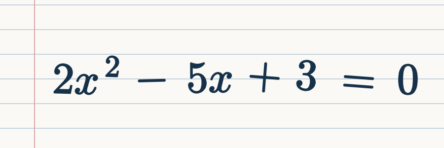

AI handwritten equation solver
From scribble to solution.
Photograph a handwritten equation. EquationLens reads it, turns it into LaTeX, and solves it with every step shown.
Your photo

What we read (LaTeX)
2x^2 - 5x + 3 = 0
Steps
- (1) Δ = b² − 4ac = 25 − 24 = 1
- (2) x = (5 ± √1) / 4
- (3) x = 1 or x = 3/2
Fig. 1. Photo to LaTeX to steps, in one pass.
Four steps, no hand-waving.
1
Upload
Add a photo of your handwritten equation.
React.js2
Preprocess
Denoise and sharpen the image for the model.
OpenCV3
Recognize
Read the symbols as LaTeX. Fix any misread term.
pix2tex, KaTeX4
Solve
Symbolic solving with the working shown.
SymPy, FastAPITheorem 1
For every supported linear or quadratic equation, EquationLens returns all real roots together with the steps that produce them.
Proof. Upload, recognize, solve. ∎
Under the hood
x = (−b ± √(b² − 4ac)) / 2a